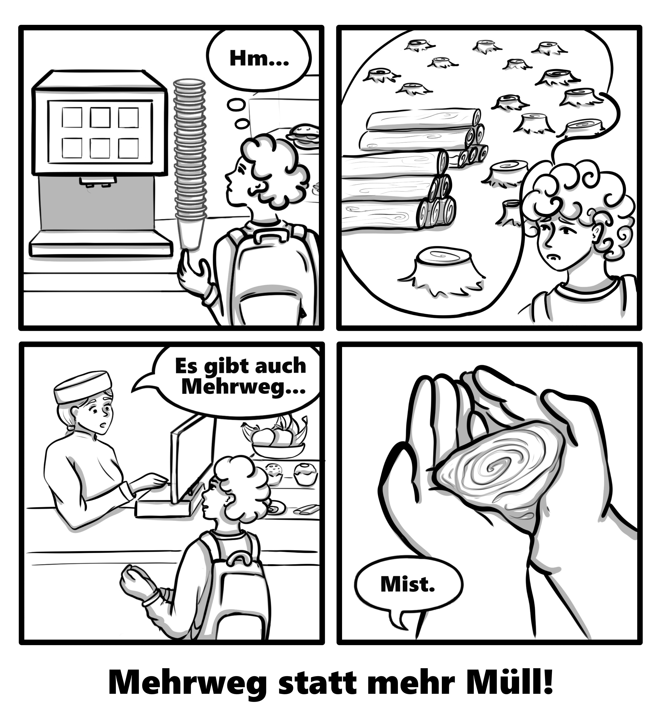

Sustainability on Campus
This comic was created as part of the course "Project Management" during my Media Informatics studies at Hochschule Flensburg.
Our team was tasked with developing a project around the theme: “Consciously sustainable - How we contribute to more sustainability at HS Flensburg: in studies, on campus, and/or in the everyday life of university members.”
The core goal of the project was to raise awareness of sustainability-related issues among students by presenting practical tips through comics. These comics were designed to be placed in relevant locations around campus, using humor and relatable situations to engage the audience and promote sustainable behavior in an accessible way.
- One about the importance of proper waste separation
- One about the benefits of using reusable dishes (Mehrweg)
For this project, I designed the following comics:
Through visual storytelling, I aimed to make sustainability both approachable and memorable.

